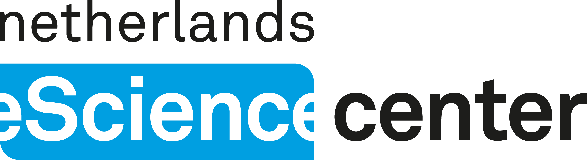
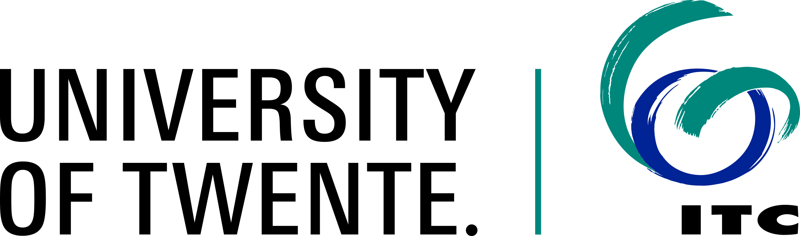
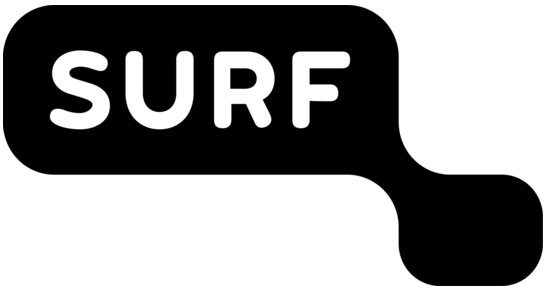
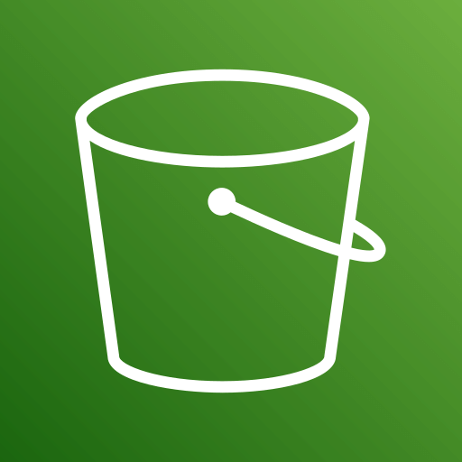
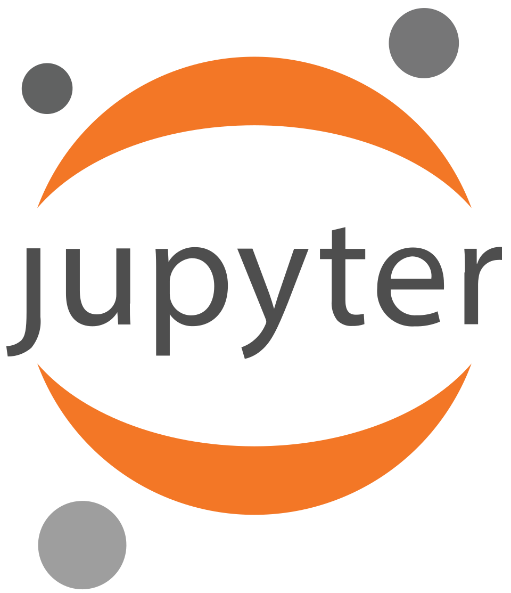
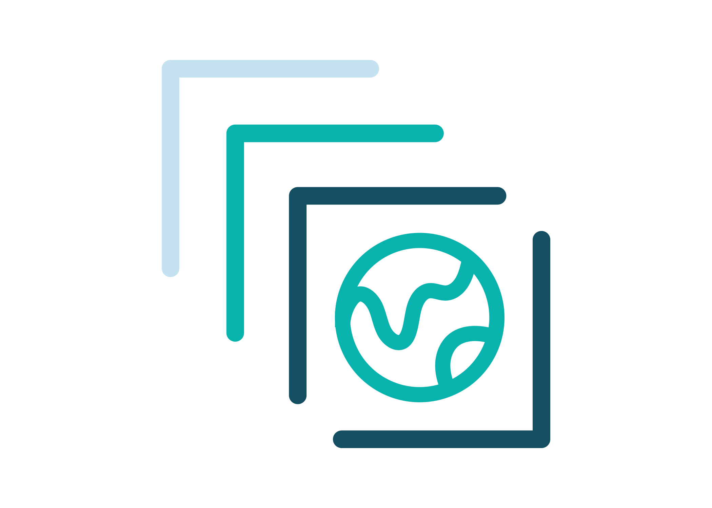
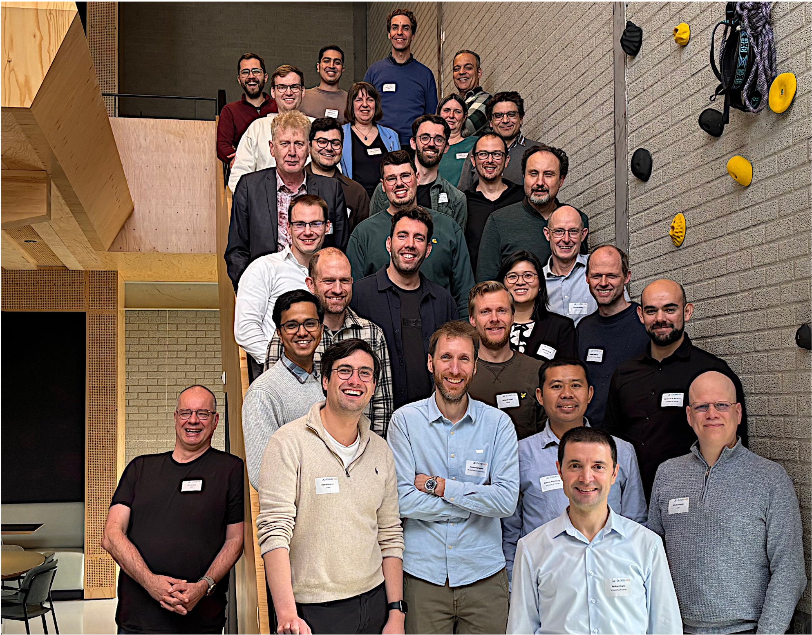

CLOUD-NES
Towards a Cloud-Native Research Community in the Netherlands.
![]()
2026-10-07

Cloud-native tools are available, yet download and process locally is still common practice.
Challenges for researchers
Not just accessing cloud-native data, but being able to use it.
- Not systematically part of GIS / geoinformatics curricula.
- Few hands-on, domain-specific training materials.
- Tutorials teach the how of COGs, STAC, Zarr, not the why or when.
- Fast-moving tools: tutorials break or go stale.
- Focus on consuming data, not on creating or serving it.
- Research infrastructure has grown around HPC: object storage is newer territory.
CLOUD-NES aims to investigate and promote cloud-native research data practices in the Natural and Engineering Sciences (NES).


The project “CLOUD-NES” with file number ICT.001.TDCC.016 of the research programme NWO Thematic Digital Competence Centers (TDCCs) 2023-2 is financed by the Dutch Research Council (NWO).
Infrastructure + Skills + Community = Sustainable Practices
- Infrastructure: cloud-based access for benchmarks and capacity building.
- Skills: access, but also process and publish with cloud-native tools.
- Community: learn, experiment, and advance best practices together.
1. Infrastructure

Object store

JupyterHub

STAC catalog
Not an operational platform: a space to experiment and learn.
Twin platforms
National research ICT infrastructure:
Central, managed, free to use for Dutch researchers.
On-premise deployment:
Demonstrates applicability across different infrastructures.
Datasets
- Datasets from PDOK (Publieke Dienstverlening Op de Kaart) and KNMI.
- Openly available in the cloud, via OGC services and file download.
- Cloud-native formats are not yet common: a good place to learn.
| Dataset | Current format | Cloud-native target |
|---|---|---|
| AHN DEM (raster) | GeoTIFF | COG |
| Aerial imagery (RGB + NIR) | GeoTIFF | COG |
| KNMI daily temperature | NetCDF3 | Zarr |
Benchmarks
Quantitative, reproducible evidence of when cloud-native pays off.
Badly tuned cloud-optimized datasets can be worse than the original.
What we compare
- Original files (GeoTIFF, NetCDF) vs. COG and Zarr.
- Virtual cubes on top of the originals and transformed: STAC, VRT, virtual Zarr.
- Chunk shape, chunk size, compression.
How we measure
- Different scenarios, e.g. deep (time series) vs. wide (mosaic).
- Metrics: not only time to access, also data transferred and number of HTTP requests.
- Co-located vs. remote analysis, on both platforms.
Where we stand
Development versions of both deployments are up and running.
Now working on datasets and benchmarks.
Early demonstration of STAC catalog for AHN data products.
Building tools to facilitate monitoring the amount of data transferred and the number of requests performed when accessing data:
- ❤️
stac-geoparquet,rustac,rustfs.
2. Skills
- Translate best practices and lessons learned into training material.
- Organize two types of trainings for researchers:
- how to access cloud-optimized datasets.
- how to generate and distribute datasets using cloud-native tooling.
- Six hands-on events, with open training materials.
- Embed these into eScience Center trainings and University of Twente curricula.
3. Community
Symposium on Cloud-Native Data in Natural and Engineering Sciences
1 April 2026, Utrecht: 35 participants from research, data infrastructures, and policy.
- Keynotes from thriveGeo, OpenGeoHub, and moreGeo: why cloud-native data?
- Stakeholder perspectives from Geonovum, KNMI, SURF, eScience Center, UT-ITC.
- Breakout session on gaps, needs, and potential solutions.

A second symposium in mid-2027 will share results and lessons learned.
What we heard
Formats & standards
- Many formats to choose from: hard for newcomers.
- Need guidance, best practices, and examples showing why a new format is better.
- Help in choosing among existing standards.
Infrastructure
- Wish for more choice and portability.
- Cloud costs are hard to forecast.
- Need local options and cost monitoring.
Training
- Fragmented materials that go stale quickly.
- Need time and incentives to change.
- Use-case specific advice; Carpentries-style lessons co-designed with users.
CLOUD-NES aims to investigate and promote cloud-native research data practices in the Natural and Engineering Sciences (NES).
Formats to benchmark? Datasets to convert? Scenarios we should test?
zenodo.org/communities/cloud-nes
The project “CLOUD-NES” with file number ICT.001.TDCC.016 of the research programme NWO Thematic Digital Competence Centers (TDCCs) 2023-2 is financed by the Dutch Research Council (NWO).